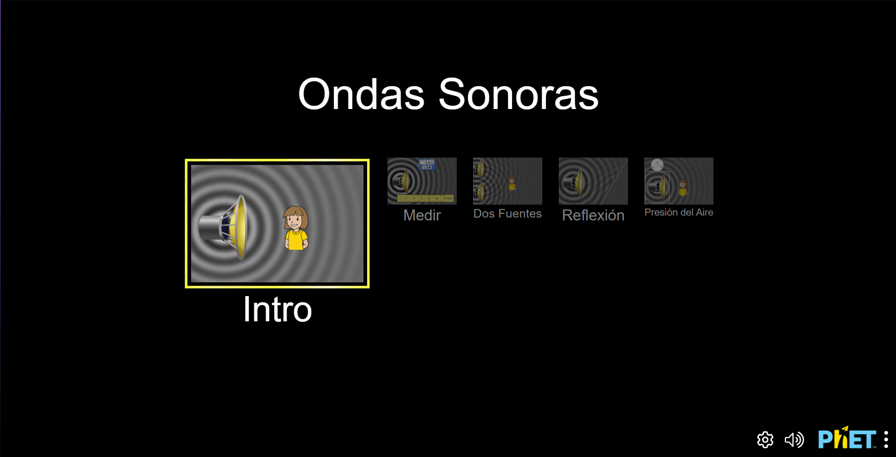

Introducción al Sonido
En física, el sonido como una onda es una representación de cómo las vibraciones se propagan a través de un medio. Las ondas sonoras se describen específicamente como ondas longitudinales. Aquí tienes una explicación de cómo se comporta el sonido en términos de ondas:
- Ondas Longitudinales: A diferencia de las ondas transversales (como las ondas en una cuerda), las ondas sonoras son longitudinales. Esto significa que las partículas del medio se mueven en la misma dirección en que se propaga la onda. Las ondas longitudinales se caracterizan por alternar entre compresiones (donde las partículas están más juntas) y rarefacciones (donde las partículas están más separadas).
- Composición de la Onda:
- Compresión: Es la región de alta presión en la onda sonora donde las partículas del medio están más densamente empaquetadas.
- Rarefacción: Es la región de baja presión donde las partículas están más separadas.
- Estructura de la Onda:
- Longitud de Onda: Es la distancia entre dos puntos consecutivos en fase, como entre dos compresiones sucesivas o dos rarefacciones sucesivas.
- Frecuencia: Es el número de ciclos (compresiones y rarefacciones) que pasan por un punto específico en un segundo. Se mide en hertzios (Hz) y está relacionada con el tono del sonido.
- Amplitud: Es la medida de la cantidad de desplazamiento de las partículas del medio desde su posición de equilibrio. La amplitud está relacionada con la intensidad o volumen del sonido.
- Velocidad de Propagación: La velocidad a la que se propaga una onda sonora en un medio depende de las propiedades del medio, como su densidad y elasticidad. En general, el sonido viaja más rápido en sólidos que en líquidos y más rápido en líquidos que en gases.
- Interferencia y Difracción: Las ondas sonoras pueden interferir entre sí, produciendo patrones de refuerzo o cancelación. También pueden difractarse, es decir, curvarse alrededor de obstáculos y esparcirse a través de rendijas.
- Reflexión y Absorción: Cuando una onda sonora encuentra un obstáculo, puede reflejarse, creando ecos. Además, parte de la energía de la onda puede ser absorbida por el material del obstáculo.
Estas características permiten que el sonido se transmita a través de diferentes medios y sean percibidos por nuestros oídos. Las ondas sonoras son fundamentales en muchas aplicaciones, desde la música hasta la tecnología de ultrasonido.
Propagación del Sonido
La propagación del sonido se refiere a la forma en que las ondas sonoras se desplazan a través de un medio, ya sea sólido, líquido o gaseoso. El sonido se propaga mediante vibraciones que generan cambios de presión en el medio, permitiendo que las ondas sonoras se transmitan de una fuente a un receptor. Un ejemplo de propagación del sonido es cuando hablamos en una habitación. Nuestra voz genera ondas sonoras que se propagan por el aire y llegan a los oídos de las personas presentes, permitiéndoles escucharnos. Otro ejemplo es el sonido de un instrumento musical, como una guitarra. Al tocar una cuerda, esta vibra y produce ondas sonoras que se propagan a través del aire, creando el sonido que escuchamos. Estos ejemplos ilustran cómo el sonido se propaga en diferentes situaciones cotidianas y cómo podemos percibirlo gracias a la propagación de las ondas sonoras en el medio.
- Aire: El medio más común para la propagación del sonido.
- Agua: Comparado con el aire, el sonido se propaga más rápido en el agua.
- Sólidos: La velocidad de propagación es mayor en sólidos debido a la densidad del material.
Características del Sonido
El sonido tiene varias características importantes que describen su naturaleza. Algunas de las principales características del sonido son la frecuencia, la amplitud, la velocidad y la longitud de onda.
- Frecuencia: La frecuencia del sonido se refiere al número de vibraciones por segundo y se mide en Hertz (Hz). A mayor frecuencia, más agudo será el sonido. La fórmula para calcular la frecuencia es:
f = v / λ, dondefes la frecuencia,ves la velocidad del sonido en el medio yλes la longitud de onda. - Amplitud: La amplitud del sonido se relaciona con la intensidad o volumen del sonido. A mayor amplitud, mayor será el volumen percibido. Sin embargo, la amplitud no tiene una fórmula específica, ya que se mide en relación con la presión de referencia.
- Velocidad: La velocidad del sonido varía según el medio en el que se propaga. En el aire a 20°C, la velocidad del sonido es de aproximadamente 343 m/s. La fórmula para calcular la velocidad del sonido es:
v = f × λ, dondeves la velocidad del sonido,fes la frecuencia yλes la longitud de onda. - Longitud de Onda: La longitud de onda del sonido se refiere a la distancia entre dos puntos correspondientes en una onda sonora. Se calcula mediante la fórmula:
λ = v / f, dondeλes la longitud de onda,ves la velocidad del sonido yfes la frecuencia. Un ejemplo sería un tono musical con una frecuencia de 440 Hz (la nota LA) propagándose a través del aire a una temperatura de 20°C. Podríamos calcular su longitud de onda utilizando las fórmulas mencionadas anteriormente.
Recuerda que estas características y fórmulas nos ayudan a entender mejor cómo se comporta el sonido y cómo podemos cuantificarlo en diferentes situaciones.
Fenómenos Ondulatorios del Sonido
Los fenómenos ondulatorios del sonido son aquellos procesos en los que el sonido se comporta como una onda al propagarse a través de un medio. Algunos de los fenómenos ondulatorios más relevantes en el estudio del sonido son:
- Reflexión: Cuando una onda de sonido incide sobre una superficie y rebota en ella, se produce el fenómeno de reflexión del sonido. Esto es lo que permite que escuchemos el eco en lugares abiertos o la reverberación en espacios cerrados.
- Refracción: La refracción del sonido ocurre cuando las ondas sonoras cambian de dirección al pasar de un medio a otro con diferente velocidad de propagación, como el aire al agua o viceversa. Este fenómeno puede afectar la percepción del sonido en ambientes acuáticos, por ejemplo.
- Difracción: La difracción del sonido se refiere a la capacidad de las ondas sonoras para rodear obstáculos y propagarse en todas direcciones al encontrarse con una apertura o borde. Este fenómeno es fundamental para explicar por qué podemos escuchar sonidos incluso cuando no estamos directamente frente a la fuente.
- Interferencia: La interferencia ocurre cuando dos o más ondas sonoras se superponen y combinan, ya sea constructiva (cuando las crestas y valles coinciden, aumentando la amplitud) o destructiva (cuando las crestas y valles se cancelan mutuamente). Este fenómeno es clave en la formación de patrones de intensidad sonora.
- Resonancia: La resonancia se produce cuando un objeto o sistema vibra a una frecuencia natural debido a la aplicación de una onda sonora externa con la misma frecuencia. Este fenómeno es relevante en la música, donde los instrumentos musicales amplifican ciertas frecuencias mediante la resonancia.
Fórmulas del Sonido
- Velocidad del Sonido: \( v = f \cdot \lambda \), donde \( v \) es la velocidad, \( f \) es la frecuencia y \( \lambda \) es la longitud de onda.
- Ecuación de la Onda: \( y(x,t) = A \sin(kx - \omega t + \phi) \), donde \( A \) es la amplitud, \( k \) es el número de onda, \( \omega \) es la frecuencia angular y \( \phi \) es la fase.
- Relación de la Frecuencia: \( f = \frac{1}{T} \), donde \( f \) es la frecuencia y \( T \) es el período.
- Nivel de Intensidad Sonora: \( L = 10 \log \left( \frac{I}{I_0} \right) \), donde \( L \) es el nivel de intensidad sonora en decibelios, \( I \) es la intensidad del sonido y \( I_0 \) es la intensidad de referencia.
Ejemplos del Sonido
- Conversación telefónica: Cuando hablas por teléfono, tu voz se convierte en señales eléctricas que se transmiten a través de cables y luego se convierten de nuevo en ondas sonoras en el auricular del receptor, permitiendo que puedan escucharte claramente.
- Música en concierto: Durante un concierto, los músicos tocan instrumentos que generan sonidos que se propagan por el aire y llegan a los oídos de la audiencia, creando una experiencia auditiva única y emocionante.
- Ruido de tráfico: El sonido de los coches, camiones y otros vehículos en la calle es un ejemplo cotidiano de la propagación del sonido en el aire. Estos ruidos pueden variar en intensidad y frecuencia dependiendo del tráfico y la velocidad de los vehículos.
- Canto de los pájaros: Los pájaros emiten sonidos para comunicarse entre ellos, marcar territorio o atraer a una pareja. Sus cantos son ejemplos naturales de cómo los seres vivos utilizan el sonido como parte de su comportamiento.
- Sirena de una ambulancia: Cuando una ambulancia circula con la sirena encendida, emite un sonido agudo y fuerte para alertar a otros conductores y peatones de su presencia inminente, demostrando cómo el sonido se utiliza como una señal de emergencia.
Estos ejemplos ilustran cómo el sonido está presente en diversas situaciones de nuestra vida diaria y cómo su propagación a través de diferentes medios nos permite percibirlo y comunicarnos de manera efectiva.
Simulación PHET
Para explorar y entender mejor el comportamiento del sonido, puedes utilizar la simulación interactiva proporcionada por PHET. Esta simulación te permitirá experimentar con ondas sonoras y observar cómo se comportan en diferentes situaciones.
Acceder a la Simulación PHET Ejercicios a Desarrollar
- Frecuencia y longitud de onda:
- a. Calcula la frecuencia de una onda sonora cuya longitud de onda es de 0.4 metros y la velocidad del sonido en el aire es de 340 m/s.
- b. Si la frecuencia de una onda sonora es de 500 Hz, ¿cuál sería su longitud de onda en el aire?
- Velocidad del sonido:
- a. ¿Cuál es la velocidad del sonido en el agua si su longitud de onda es de 0.1 metros y su frecuencia es de 1500 Hz?
- b. Si la velocidad del sonido en un material sólido es de 5000 m/s y su longitud de onda es de 0.02 metros, ¿cuál es la frecuencia de la onda sonora?
- Intensidad y amplitud:
- a. Si la intensidad de una onda sonora es de 50 W/m² a una distancia de 2 metros, ¿cuál sería la amplitud máxima de esa onda?
- b. Si la amplitud de una onda sonora se duplica, ¿cómo afectaría esto a su intensidad si todo lo demás permanece constante?